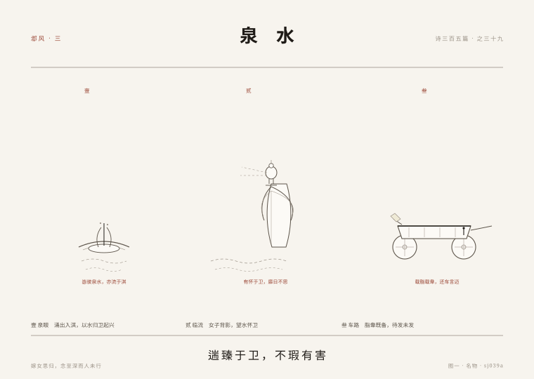
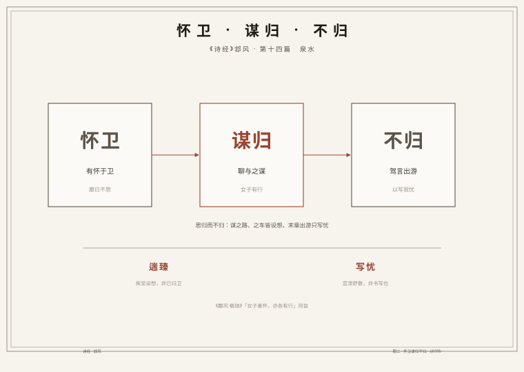

第三十九篇 泉水
邶风 · 之三 SJ039
朗读 · 普通话
依经文原文朗读，章次不读出；配古琴底乐，不改速、不加拖腔。全库同一音色（豆包 TTS），非播音员录制。
一 解题
诗三判：
- 谁在说：一个出嫁于异姓诸侯、远离卫国的女子。她见泉水归淇而起念，追想嫁时所经之地，与同姓诸姬商议归宁；末章驾车出游，只把忧思写出，终究没有成行。
- 说什么事：泉水涌出，流入淇水；我怀念卫国，没有一天不想。同姓诸姬美好，且与她们商量一回。嫁时宿于泲、饯于祢；女子出嫁，本就远离父母兄弟；途中问候诸姑，又问到伯姊。又宿于干、饯于言；车轴涂油、装上辖键，掉转车子就要走快，想一直奔回卫国——这回去，又有什么妨害呢？我想起肥泉，为此长叹；念着须邑与漕邑，心里悠悠难放。驾起车来出外走走，好把这份忧思宣泄出去。
- 为何编在此：前几篇写室家之怨、征役之思，此篇写出嫁女子的归宁之念。人已嫁出家门，礼制上归宁有期有节；她思之愈深，而归途愈不可即。邶风这批诗，由室内推到行役，又由行役推到「嫁而远父母」的女子之远。
《毛序》：「《泉水》，卫女思归也。嫁于诸侯，父母终，思归宁而不得，故作是诗也。」——以为父母既终，归宁不得，思而作此。
朱子《诗集传》：「卫女嫁于诸侯，思归宁而不得，故作此诗。」——朱子承《序》，只取思归不得之意。
本库的看法：这首诗的骨在归思而「不瑕有害」——思归而不归。
三章「遄臻于卫，不瑕有害」，像是把回程已经想妥：车也装好，路也问过，自问回去有何不可。可是第四章落回来，仍是「驾言出游，以写我忧」——出游不是归卫，只是驾车散忧。念到极处，人没有走；这是礼制压着的归思，不是绝决的出走。
二 经文
第一章
毖彼泉水，亦流于淇。有懷于衛，靡日不思。孌彼諸姬，聊與之謀。
第二章
出宿于泲，飲餞于禰。女子有行，遠父母兄弟。問我諸姑，遂及伯姊。
第三章
出宿于干，飲餞于言。載脂載舝，還車言邁。遄臻于衛，不瑕有害？
第四章
我思肥泉，茲之永歎。思須與漕，我心悠悠。駕言出遊，以寫我憂。
分章：毛传、朱子皆四章，章六句。一章泉流起兴，怀卫谋归；二章追嫁时所经；三章设想驾车速归；四章落回出游写忧。章法由眼前之水，到途中之地，到心中之车，最后仍是不出门的忧。
三 韵读
| 一 |
淇、思、姬；謀 |
之部／幽部 |
| 二 |
泲、禰、弟、姊 |
脂部 |
| 三 |
干、言；邁、害 |
元部／月部 |
| 四 |
泉、歎；漕、悠、遊、憂 |
元部／幽部 |
一章之部长而思远，「谋」字转入幽部，商量之声低回；二章脂部细密，一路地名挨次数来；三章元部开阔、月部入声紧促，「遄臻」之疾与「有害」之问一并落下；四章先元部一叹，再幽部一收，悠悠之忧走到「写」字仍未写尽。全篇落脚声是「以写我忧」——忧可暂写，归不可得。
四 字义与名物
- 毖（bì）——流泉涌出之貌。一说「慎」，本库从涌出貌。不是「毖后」之戒慎。
- 泉水——泉源之水。
- 淇——淇水，卫地之水；水归于淇，喻人念于卫。
- 有怀于卫——怀念卫国。怀，念。
- 靡日不思——无日不思。靡，无。
- 孌（luán）——美好貌。
- 諸姬——同姓之诸女，指一同出嫁的姬姓女子。
- 聊與之謀——且与她们商量。聊，且；谋，商议归宁之事。
- 泲（jǐ）——地名，嫁时所宿。
- 禰（nǐ）——地名，嫁时饯行之所。
- 飲餞——以酒食送行。饯，饯饮。
- 女子有行——女子出嫁。行，嫁。不是「行走」之行。
- 遠父母兄弟——远离父母兄弟。礼制之辞：嫁女于外，本当远其父母兄弟。
- 諸姑、伯姊——夫家之姑与姊（一说娘家姑姊）。
- 干、言——皆地名，嫁时所经。
- 載脂載舝——且给车轴涂油，且装上轴头之键。载，语助，且；脂，以油涂轴；舝（xiá），车轴头的键，即辖。
- 還車言邁——掉转车头而行。还，旋；迈，行。
- 遄臻于衛——疾速到达卫国。遄（chuán），疾；臻，至。
- 不瑕有害——瑕通「遐」，何也；无害即「有何害」。一说瑕为瑕疵，两说入存疑，正文取「无害」。
- 肥泉——泉名，在卫地；一说泉源同出而流别为二。
- 茲之永歎——为此长叹。兹，此；永叹，长叹。
- 須、漕——皆卫邑名。
- 悠悠——绵长不绝。
- 駕言出遊——驾车出游。言，语助。
- 寫我憂——宣泄我的忧思。写，输写、舒散。不是「书写」之写。
五 今译
第一章
涌出的那股泉水，流入淇水之中。我怀念着卫国，没有一天不在想。那些同姓诸姬美好，且与她们商量一回。
第二章
出嫁时曾在泲地留宿，在祢地饯行。女子出嫁，本就远离父母兄弟。途中问候我的诸姑，又问到伯姊。
第三章
又曾在干地留宿，在言地饯行。车轴涂好油、装上车辖，掉转车子就要快走。一直奔回卫国去，这回去又有什么妨害呢？
第四章
我想起肥泉，为此长叹。念着须邑与漕邑，我心悠悠难放。驾起车来出外走走，好把这份忧思宣泄出去。
译注：「毖」译泉涌之貌；「诸姬」译同姓诸女；「女子有行」译女子出嫁；「舝」译车辖；「遄」译疾速；「不瑕有害」译「有何妨害」；「写」译宣泄、舒散，不可解作书写。
六 章旨
一章：见水而怀卫。泉归于淇，人归于思；思无可与言，聊谋诸姬。
二章：追嫁时之路。泲祢干言，一路宿饯；有行远亲，是礼制所当然。
三章：设想速归。脂舝既备，还车言迈；自问无害，似已成行。
四章：落回出游。肥泉须漕，念念不已；出游写忧，终非归卫。
一章托水起兴，二、三章把嫁路与归路一一铺到眼前，四章忽然收住：车驾是出了门，去的却不是卫国。前三章之谋、之路、之车，到末章只化作一场出游——思归而不归，是此篇的落点。
七 诗教
- 赋：泉流、宿饯、车辖、出游皆实写其事；一章以泉水归淇起兴，赋而兼比。
- 观：可观一「礼」。女子出嫁，远父母兄弟；归宁有期有节，思之而不可辄返，观礼制如何安处人情。
- 群：所思是诸姬、诸姑、伯姊；她的归念先在同姓女子中商量，由一族之亲相慰。
- 怨：有怨，怨远父母、怨归不得；怨不出恶声，只付之永叹与出游。
八 分寸与边界
- 不可把「毖」解作「戒慎」「惩毖」。毖在此是泉涌之貌；戒慎一说入存疑，正文不从。
- 不可把「女子有行」的「行」解作一般行走。行是出嫁，「女子有行，远父母兄弟」是礼制之辞。
- 不可把「不瑕有害」读作「没有瑕疵、没有害处」的肯定语。瑕通「遐」，何也；此句是自问「回去有何不可」，设想之辞。
- 不可把三章「遄臻于卫」当成已经回到卫国。这是设想中速归；末章「驾言出游」才是实事，出游非归卫。
- 不可把末章「写我忧」解作写诗写忧。写是输写、宣泄；驾车出游以散忧，不是著文抒怀。
九 存疑
- 作者与本事：旧说以为许穆夫人之媵或同姓女思归；一说泛言卫女嫁诸侯。本库只取「出嫁女子思归」，不坐实其人。
- 父母是否终养：《毛序》称「父母终，思归宁而不得」；朱子不言父母终。本库两存，取归宁不得。
- 「不瑕有害」之瑕：一说瑕通「遐」，何也，「不瑕有害」即「无害」；一说瑕为瑕疵，谓此行无过。本库从「遐」。
- 诸姬、诸姑、伯姊所指：一说皆夫家之亲，一说兼指娘家同姓。本库取同姓诸女相谋，姑姊两存。
- 肥泉、须、漕之地望：皆卫地旧邑，具体所在今难确指；本库只存其为卫地之名。
十 跨典
- 《鄘风·载驰》「女子善怀，亦各有行」——同为卫女思归之作；彼为许穆夫人唁卫而作，此为嫁女思宁而歌，怀而有行、思而不越礼。
- 《邶风·燕燕》「之子于归，远送于南」——同写女子有行；彼送别于野，此追思于嫁后之路。
- 《卫风·竹竿》「女子之远，兄弟父母」——嫁女思归之对读篇；皆言远嫁之念，皆未敢径归。
- 《左传·庄公十二年》「宋万弑闵公于蒙泽」，卫人伐宋、纳公子御说——须、漕为卫邑，可参卫地变迁之迹。
- 《礼记·檀弓上》「妇人不越疆而吊」——女子出嫁后往来有界；此篇思归而不得越疆，可与礼制对读。
十一 双卡与图
双卡五对：
| 毖（泉涌貌） |
戒慎（误训） |
| 有行（出嫁） |
行走（误训） |
| 遄臻（疾至设想） |
已归卫国（误读） |
| 写忧（宣泄） |
书写（误训） |
| 思归而不归 |
思归而已归 |

图一 · 泉眼·淇水·嫁时车路 名物图

图二 · 怀卫—谋归—不归 义理图
读图三处：
- 泉眼与水纹求可辨：名物图取泉口涌出、波纹入淇两处特写；不画全川大水，小尺度下全形必失真。
- 车与辖是三章实物：「载脂载舝」图上画车舆、轴头辖键与涂油之笔；车未画成疾驰，只作整装待发之态。
- 义理三格是一条断念：怀卫—谋归—不归，箭头走到末格即止；两尺标出「遄臻」「写忧」，见念归而人未归。